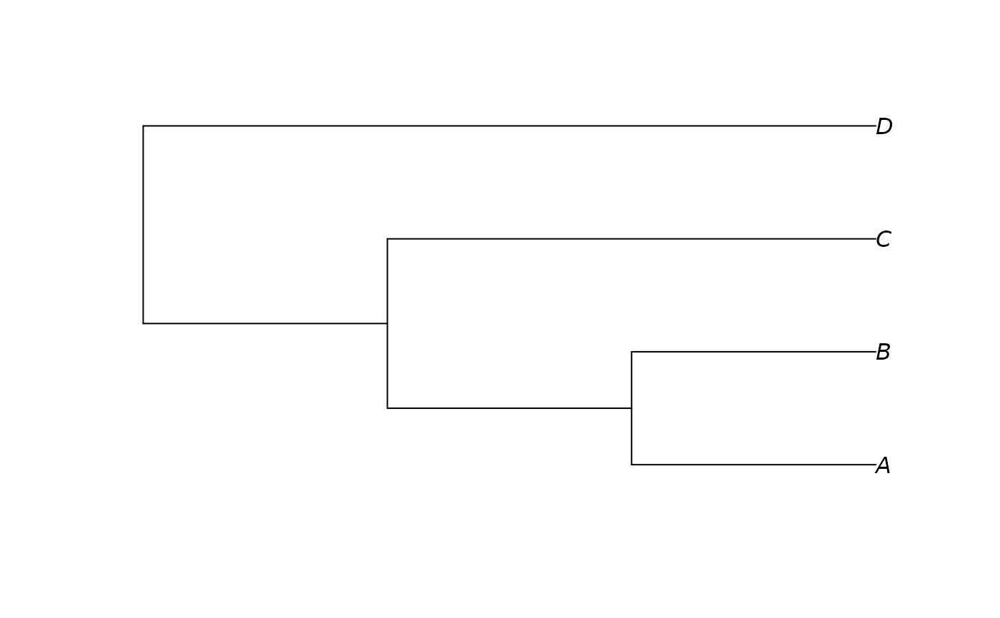
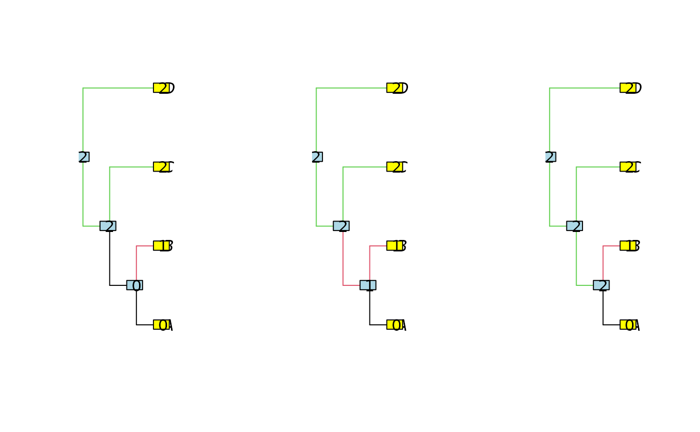

Enumerate all the possible regime allocations, given a clustering of the tips.
Source:R/parsimonyNumber.R
enumerate_parsimony.Rdenumerate_parsimony enumerate all the equivalent allocation of the
regimes in the tree, a clustering of the tips being given. The number of such
equivalent regimes is given by parsimonyNumber (which is faster).
Arguments
- phylo
a phylogenetic tree, class
phylo.- clusters
a vector representing the group of each tip. (Default to only one group with all the tips.)
Value
an S3 object of class "enumerate_parsimony", with:
- nbrReconstructions
an object of class "
parsimonyCost", result of functionparsimonyCost.- allocations
a list of size Nnode + ntaxa. Each entry i of the list represents the solutions for the subtree starting at node i. It is a list with nclus entries, each entry being a matrix. A line of the kth matrix for the ith node is one possible allocation of the shifts, starting with regime k for node i.
- phylo
the entry phylogenetic tree
Details
Function extract.enumerate_parsimony furnishes the result in a
human readable form (for any subtree).
Function plot.enumerate_parsimony plots all the solutions found on
the tree.
Examples
tree <- read.tree(text="(((A,B),C),D);")
plot(tree)

clusters <- c(0, 1, 2, 2)
sols <- enumerate_parsimony(tree, clusters)
plot(sols)

## Extract the parsimonious solutions from the root
extract(sols) # each line is a solution, with states of each node
#> [,1] [,2] [,3] [,4] [,5] [,6] [,7]
#> [1,] 0 1 2 2 2 2 0
#> [2,] 0 1 2 2 2 2 1
#> [3,] 0 1 2 2 2 2 2
## Extract the number of solutions from the root
extract(sols, what = "number")
#> [1] 3
extract(parsimonyNumber(tree, clusters)) # same result, more efficient
#> [1] 3
## Extract the cost of the solutions from the root
extract(sols, what = "cost")
#> [1] 2
extract(parsimonyCost(tree, clusters)) # same result, more efficient:
#> [1] 2
## Extract for the sub-tree below node 7
extract(sols, 7) # NAs: non-existing nodes in the sub-tree
#> [,1] [,2] [,3] [,4] [,5] [,6] [,7]
#> [1,] 0 1 NA NA NA NA 0
#> [2,] 0 1 NA NA NA NA 1